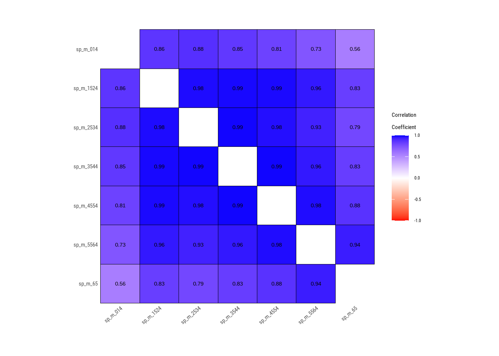

Este material es parte de la Unidad 1 del Curso de Epidemiología - Nivel Avanzado del Instituto Nacional de Epidemiología “Dr. Juan H. Jara” - ANLIS
Errores comunes en R
Los mensajes de error ocurren cuando R no puede completar la ejecución de un comando. Para ilustrar los errores más comunes usaremos el dataset de ejemplo who2 que viene incluido en la ayuda de tidyverse, que contiene información por año, país y grupos etarios del Informe Global sobre la Tuberculosis de la Organización Mundial de la Salud (WHO por sus siglas en inglés).
# Carga datosdata("who2")# Nombres de columnasnames(who2)
Error in eval(expr, envir, enclos): object 'who_arg' not found
En algunos casos podemos haber escrito un comentario de texto en varias líneas y olvidado anteponer el # al empezar cada línea:
# Crea objeto con la media de casos para hombres de entre 25 y 34 años residentes en Argentinawho_arg >- who2 %>%filter(country =="Argentina") %>%mean(sp_m_2534, na.rm = T)
Error: <text>:2:4: unexpected symbol
1: # Crea objeto con la media de casos para hombres de entre
2: 25 y
^
Errores de objeto no encontrado
Ocurren cuando el código hace referencia a un objeto no cargado en el entorno de trabajo actual.
Un ejemplo típico es cuando intentamos usar una función de un paquete que no cargamos:
Error in `filter()`:
ℹ In argument: `Country == "Argentina"`.
Caused by error:
! object 'Country' not found
Otros tipos de error
Suelen estar relacionado a causas más complejas, como ser problemas de lógica, operaciones no válidas, errores de tipo de datos o errores en la instalación de paquetes.
Advertencias en R
A diferencia de los errores, las advertencias permiten continuar con la ejecución del código pero alertan sobre posibles problemas o situaciones inusuales.
Uno de los más frecuentes es cuando queremos usar funciones que van a quedar obsoletas o están difuntas:
library(dlookr)
Warning: package 'dlookr' was built under R version 4.3.3
Registered S3 methods overwritten by 'dlookr':
method from
plot.transform scales
print.transform scales
Attaching package: 'dlookr'
The following object is masked from 'package:tidyr':
extract
The following object is masked from 'package:base':
transform
Warning: 'plot_correlate' is deprecated.
Use 'plot.correlate' instead.
See help("Deprecated")

Solución de errores
A veces los errores y advertencias ocurren cuando la memoria interna está saturada porque tenemos demasiados paquetes y objetos cargados o porque nos quedaron cosas abiertas de sesiones anteriores. Un primer paso entonces es realizar lo siguiente:
Reiniciar sesión de R desde el menú Session: Restart R o con el atajo de teclado CTRL + SHIFT + F10.
Si quedaran objetos abiertos en el environment, limpiar el mismo apretando el ícono de la escoba o escribiendo en la consola el comando rm(list = ls()).
Apretar el botón que indica el uso de memoria (a la izquierda del ícono de la escoba) y seleccionar la opción Free Unused R Memory.
Si el problema persiste pasaremos a revisar nuestro código exhaustivamente a fin de detectar posibles errores de sintaxis o de objeto no encontrado. RStudio suele marcarnos los errores de código subrayando en rojo el lugar dónde se encuentra el símbolo faltante o sobrante y colocando una X roja en el número de línea correspondiente.
Si al revisar el código no encontramos la fuente del error/advertencia, podemos acceder a la ayuda de la función de las siguientes formas:
Consultar la documentación de la función entrando a la ayuda del paquete correspondiente desde la solapa Packages y buscando el nombre de la función que nos genera el problema.
Ejecutando en la consola ?nombre_de_la_función (por ejemplo ?mean), o bien posicionando el cursor sobre la función y presionando la tecla F1.
Buscando online la documentación del paquete.
Cuando siguiendo los pasos anteriores no pudimos identificar ni resolver el problema, podemos solicitar ayuda online en alguno de los siguientes recursos:
Buscar el mensaje de error en el buscador de Google
Herramientas de inteligencia artificial como ChatGPT, Gemini, etc. (no recomendable para usuarios/as principiantes)
Foros específicos de R como Stack Exchange, Stack Overflow, o de R para Salud Pública como Comunidad AppliedEpi (antes de postear en cualquiera de estos foros, buscar si otra persona no posteó anteriormente el mismo problema)
Pedido de ayuda en foros
Antes de publicar un mensaje de ayuda en cualquier foro, debemos aprender a contextualizar el problema para que otras personas puedan indicarnos posibles soluciones. Algunos de los pasos a seguir al elaborar un posteo son los siguientes:
Describe el problema de manera clara y concisa
Proporciona todos los detalles relevantes: el código que estás utilizando, los errores que estás recibiendo y cualquier intento que hayas hecho para resolver el problema por tu cuenta.
Proporciona información adicional como el sistema operativo que estás usando, la capacidad de almacenamiento en disco y de memoria RAM, si estás usando una red de uso limitado, etc.
Adjunta capturas de pantalla del error
En el foro del curso de Avanzada todos trabajaremos con los mismos datasets ficticios creados con fines educativos. Sin embargo, por lo general en Epidemiología y Salud Pública nos encontramos con datasets con información sensible tales como el nombre y apellido, DNI, domicilio o teléfono de los participantes de un estudio y no podemos publicar esos datos en cualquier parte.
En estos casos, podemos crear un set de datos ficticio con las mismas características que el real o solamente seleccionar algunas columnas y filas que no contengan información que pueda llevar a la identificación del paciente/participante. Por ejemplo, con la base de la WHO que vimos anteriormente, generamos un dataset mínimo de 6 filas y 8 columnas:
# A tibble: 6 × 8
year sp_m_014 sp_m_1524 sp_m_2534 sp_m_3544 sp_m_4554 sp_m_5564 sp_m_65
<dbl> <dbl> <dbl> <dbl> <dbl> <dbl> <dbl> <dbl>
1 1980 NA NA NA NA NA NA NA
2 1981 NA NA NA NA NA NA NA
3 1982 NA NA NA NA NA NA NA
4 1983 NA NA NA NA NA NA NA
5 1984 NA NA NA NA NA NA NA
6 1985 NA NA NA NA NA NA NA
Sin embargo, si se tratara de datos reales, deberíamos presentarlos de alguna forma que permita a otros usuarios/as reproducir el error. Para estos casos, existen paquetes tales como datapasta y reprex, que permiten crear ejemplos mínimos reproducibles (REPREX por sus siglas en inglés):
# Creamos el conjunto de datos ficticioslibrary(datapasta)datos <- who2 %>%filter(country =="Argentina") %>%select(year, starts_with("sp_m")) %>%head() %>%dpasta()
Al ejecutar el comando dpasta(), nuestro código se transforma de la siguiente manera:
# A tibble: 6 × 8
year sp_m_014 sp_m_1524 sp_m_2534 sp_m_3544 sp_m_4554 sp_m_5564 sp_m_65
<dbl> <lgl> <lgl> <lgl> <lgl> <lgl> <lgl> <lgl>
1 1980 NA NA NA NA NA NA NA
2 1981 NA NA NA NA NA NA NA
3 1982 NA NA NA NA NA NA NA
4 1983 NA NA NA NA NA NA NA
5 1984 NA NA NA NA NA NA NA
6 1985 NA NA NA NA NA NA NA
Asignamos el código generado al objeto datos y con esto ya contamos con un dataset mínimo para que otra persona pueda reproducir el mensaje de error. Para opciones más avanzadas de como compartir ejemplos mínimos reproducibles, pueden consultar la documentación del paquete reprex.
Importante
Recuerden publicar sus consultas en el foro de ayuda del curso, en lugar de escribir a los/as docentes por mensajes privados. De esta forma, podemos ayudar a otros/as estudiantes que presenten problemas similares y enriquecer el proceso de aprendizaje.